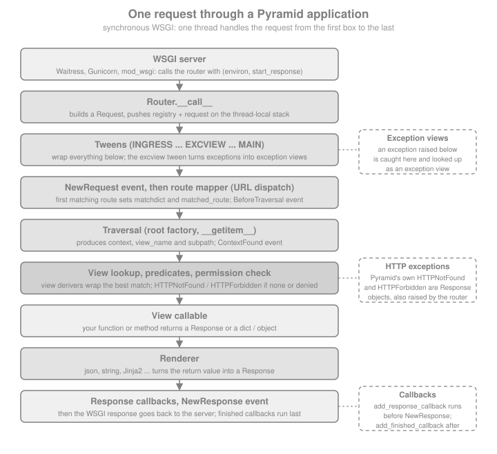

Introduction & Architecture
|
This content was generated with the assistance of AI and should be verified against the official documentation before being relied on in production. |
This page is written against Pyramid 2.1 (released 2026-03-11, still the latest stable release on 2026-10-07, the date of this check). Pyramid 2.1 requires Python 3.10 or newer and lists support for Python 3.10 to 3.14 on PyPI; the code on this page uses Python 3.10+ syntax and was executed on Python 3.13 with WebTest. The page explains what Pyramid is made of, why it is shaped the way it is and where it fits among Python web frameworks, before the rest of the section builds Bookshelf Shelves — public shelves of books owned by users, addressed by traversal and protected by ACLs, plus a JSON API under URL dispatch — step by step.
What Pyramid Is
The official introduction describes Pyramid as a Python web application framework designed to make creating web applications easier, and states its engineering principles as simplicity, minimalism, documentation, speed, reliability and openness. "Minimalism" is the one that shapes the code: out of the box Pyramid provides only the core tools nearly every web application needs — mapping URLs to code, security and serving static assets — and everything else (templates, databases, forms, sessions beyond the built-in signed cookie) is an add-on you opt into. The project’s slogan is "Start Small, Finish Big, Stay Finished": the same framework should carry a single-file application and a very large one, so that nobody has to rewrite the first in another framework when it outgrows it.
The table maps that promise to concrete pieces of Pyramid 2.1.
| Part | What it provides | Built on |
|---|---|---|
Configuration |
|
Pyramid’s own two-phase action system, venusian for decorator scanning, the application registry. |
Resolution of URLs to code |
URL dispatch (routes with patterns) and traversal (a tree of resource objects), usable alone or together. |
The route mapper and the traverser inside the router. |
Views and renderers |
View callables (functions, methods or callable instances), view predicates, view derivers, and renderers such as
|
|
Request and response |
A |
WebOb. |
Security |
One security policy interface (2.0 and later), ACLs, permissions, CSRF protection, signed-cookie sessions. |
|
Extension points |
Events and subscribers, tweens (WSGI-like middleware inside the router), hooks and add-ons loaded with |
The registry and |
Tooling |
|
hupper, plaster, PasteDeploy, Waitress (the default development and production server in the starter). |
Source: Pyramid: Introduction
The runtime dependencies of the pyramid 2.1 distribution on PyPI show how small the core is: hupper, plaster,
plaster_pastedeploy, setuptools (constrained to a version below 82), translationstring, venusian, webob,
zope.deprecation and zope.interface. There is no template engine, no ORM, no form library and no HTTP server in the
list. The first example reads the installed metadata, so the claim can be checked against the environment instead of
taken from this page.
import warnings
from importlib.metadata import requires, version
warnings.simplefilter("ignore") # setuptools warns that pkg_resources is deprecated
pyramid_version = version("pyramid")
print("pyramid", pyramid_version)
assert tuple(int(p) for p in pyramid_version.split(".")[:2]) >= (2, 1)
dependencies = sorted(
{r.split(";")[0].split("<")[0].split(">")[0].split("=")[0].strip().lower() for r in requires("pyramid")}
)
print(dependencies)
for expected in ("webob", "venusian", "zope.interface", "hupper", "plaster", "translationstring"):
assert expected in dependencies
assert "jinja2" not in dependencies and "sqlalchemy" not in dependencies and "waitress" not in dependenciesSource: Pyramid on PyPI
The script prints pyramid 2.1 and a list of nine distribution names. Waitress, Jinja2 and SQLAlchemy are absent on
purpose: the starter project and the add-ons bring them in, the core does not.
Where It Comes From: Pylons Project, repoze.bfg, Zope and Pylons
The official introduction gives the lineage in a few sentences. The first release of Pyramid’s predecessor, repoze.bfg, was made in July 2008; at the end of 2010 it was renamed Pyramid and merged into the Pylons Project. The documentation states that Pyramid was inspired by Zope, Pylons (version 1.0) and Django, and says what it borrowed from each:
| Ancestor | What Pyramid took from it |
|---|---|
Zope |
Applications that can be reused, modified and extended without editing their code; traversal and declarative
security (permissions on views, ACLs on resources); the component registry and |
Pylons 1.0 |
Being largely free of policy — no mandated database or template language — and the approach to URL dispatch. |
Django |
A strong documentation culture and the word view for the callable that handles a request. |
Source: Pyramid: Introduction
first release July 2008"] --> B["Pyramid
renamed late 2010
part of Pylons Project"] B --> C["Pyramid 1.x
last release 1.10.8"] C --> D["Pyramid 2.0
2021-03-01
Python 3 only"] D --> E["Pyramid 2.1
2026-03-11
Python 3.10 to 3.14"]
The Pylons Project is the umbrella organisation, not a single framework. Its website describes it as a collection of
related technologies; Pyramid is the featured one, and the project also publishes libraries that Pyramid applications
routinely use: WebOb (request and response objects), Waitress (a WSGI server), WebTest (testing WSGI applications
without a real HTTP server), Deform and Colander (forms and schemas), translationstring, venusian, plaster and hupper.
The older Pylons Framework is listed on the same website as deprecated and is not the same thing as Pyramid. Documents
that say "Pylons" and describe paster create or controllers describe that older framework, not what is covered here.
Source: Pylons Project
On the maintenance status, the facts are these. PyPI classifies Pyramid as "6 - Mature". Releases are rare: 2.0 on 2021-03-01, 2.0.2 on 2023-08-25 and 2.1 on 2026-03-11, with the last 1.x release (1.10.8) published on the same day as 2.0. Rare releases here mean a stable, conservative framework, not necessarily an abandoned one, but they also mean that support for a new Python version or a fix for an edge case can take a long time to reach a release. The practical advice is to pin the version, read the change history before upgrading, and treat third-party add-ons individually: each one has its own maintenance status, which the later pages mention where it matters.
Source: Pyramid: Change History
Start Small, Finish Big: the Same Application at Both Ends
The official introduction lists "build single-file applications" as the first of Pyramid’s distinctive features: an application can live entirely in one Python file, and the framework does not make you learn Python packaging first. Here is Bookshelf Shelves at its smallest, and the same application tested through WebTest, which drives the WSGI callable directly with no socket involved. Every example on this page runs as shown.
from pyramid.config import Configurator
from pyramid.response import Response
from webtest import TestApp
SHELVES = {"ada": ["Dune", "Hyperion"], "grace": ["Neuromancer"]}
def list_books(request):
shelf = request.matchdict["shelf"]
if shelf not in SHELVES:
return Response(f"No shelf called {shelf}", status=404)
return Response(", ".join(SHELVES[shelf]), content_type="text/plain")
with Configurator() as config:
config.add_route("shelf", "/shelves/{shelf}")
config.add_view(list_books, route_name="shelf")
app = config.make_wsgi_app()
client = TestApp(app)
print(client.get("/shelves/ada").text)
print(client.get("/shelves/nobody", status=404).text)
assert client.get("/shelves/ada").text == "Dune, Hyperion"The pattern in add_route uses a placeholder in braces; the matchdict on the request holds its value. In prose,
spell such patterns as /shelves/{shelf}. There is no global application object: the application is whatever
make_wsgi_app() returns, and it is a plain WSGI callable that any WSGI server can run. The next page installs Pyramid
and runs this program under Waitress; the page after that builds a full project with the official cookiecutter.
The Request Pipeline
A Pyramid request passes through a fixed sequence of stages, shown in the figure and then reproduced by the program below. The narrative documentation lists the same stages in its Request Processing chapter; the figure adds the tween layer, which wraps all of them.

In words, with the official terminology:
-
The WSGI server calls the router, the object returned by
make_wsgi_app(), with the WSGI environment. -
The router builds a request from the environment and pushes the registry and the request onto a thread-local stack, which is what makes
get_current_request()andget_current_registry()work. -
The request goes through the tweens: WSGI-like middleware that runs inside the router and has access to the registry. Pyramid itself installs one, the exception-view tween, so that an exception raised below it can be turned into a response by an exception view. Tween ordering uses the names
INGRESS,MAINandEXCVIEW(the last one is the dotted name of the exception-view tween factory). -
A
NewRequestevent is sent to subscribers. If any routes are configured, the route mapper tries them in the order they were added; the first match addsmatchdictandmatched_routeto the request, and aBeforeTraversalevent is sent. -
The router generates the root object (the route’s factory if it has one, otherwise the root factory, otherwise a default one) and calls the traverser with it. The traverser uses the
__getitem__of the root and of each sub-object to walk the path and returns a context, a view name and a sub-path. AContextFoundevent follows. -
Pyramid looks up a view callable from the context, the request and the view name, honouring predicates. If none exists it raises
HTTPNotFound; if the view is protected by a permission and the security policy says no, it raisesHTTPForbidden. -
The view is called. If it has a renderer and returns something other than a response, the renderer turns the return value into a response.
-
Response callbacks registered with
request.add_response_callbackrun, aNewResponseevent is sent, and the response becomes the WSGI response. Finished callbacks registered withrequest.add_finished_callbackrun last, and the thread-local stack is popped.
The program below makes the order visible. It registers a tween, subscribers for the four events, a response callback and a finished callback, then requests an existing and a missing shelf and prints the trace.
import sys
import types
from pyramid.config import Configurator
from pyramid.events import BeforeTraversal, ContextFound, NewRequest, NewResponse
trace = []
def trace_tween_factory(handler, registry):
def trace_tween(request):
trace.append("tween: before")
response = handler(request)
trace.append("tween: after")
return response
return trace_tween
def on_new_request(event):
trace.append("event: NewRequest")
event.request.add_response_callback(lambda request, response: trace.append("response callback"))
event.request.add_finished_callback(lambda request: trace.append("finished callback"))
def shelf_view(request):
trace.append("view")
return {"shelf": request.matchdict["shelf"], "books": SHELVES.get(request.matchdict["shelf"], [])}
# add_tween takes the dotted name of an importable factory. In a project the factory lives in a module such as
# bookshelf/tweens.py; this single-file script publishes itself under such a name instead.
sys.modules["bookshelf_tweens"] = types.SimpleNamespace(trace_tween_factory=trace_tween_factory)
with Configurator() as config:
config.add_tween("bookshelf_tweens.trace_tween_factory")
config.add_subscriber(on_new_request, NewRequest)
config.add_subscriber(lambda event: trace.append("event: BeforeTraversal"), BeforeTraversal)
config.add_subscriber(lambda event: trace.append("event: ContextFound"), ContextFound)
config.add_subscriber(lambda event: trace.append("event: NewResponse"), NewResponse)
config.add_route("shelf", "/shelves/{shelf}")
config.add_view(shelf_view, route_name="shelf", renderer="json")
traced_app = TestApp(config.make_wsgi_app())
traced_app.get("/shelves/ada")
print(trace)
assert trace == [
"tween: before",
"event: NewRequest",
"event: BeforeTraversal",
"event: ContextFound",
"view",
"tween: after",
"response callback",
"event: NewResponse",
"finished callback",
]Source: Pyramid: Request Processing
The tween factory receives the next handler and the registry and returns the tween, a callable taking the request.
add_tween insists on a dotted name to a globally importable object, because the name is what the ordering constraints
(over and under) and ptweens refer to; passing the function object raises a ConfigurationError. The events fire
in the documented order, and the response callback runs
before NewResponse while the finished callback runs after the response has been produced.
A request that matches nothing shows the second half of the story: no view is found, HTTPNotFound is raised, and the
exception-view tween converts it into the 404 response, so the tween code above still sees a normal response on the way
out.
trace.clear()
missing = traced_app.get("/no-such-page", status=404)
print(missing.status, trace)
assert missing.status_int == 404
assert "view" not in trace
assert trace[0] == "tween: before" and "tween: after" in traceSource: Pyramid: Request Processing
The router and the view system are covered in depth by later pages of this section: URL dispatch, traversal, view configuration, errors and exception views, and events, tweens and hooks. The point here is the shape: a small number of fixed stages with a well-defined extension point at each of them.
The Design Defense Summarised
Pyramid’s documentation includes a chapter, Defending Pyramid’s Design, that records the challenges lodged against its design and the answer to each. It is worth reading in full; the table below summarises the ones that define how Pyramid applications look, and each row is a deliberate trade-off rather than an accident.
| Design decision | What the documentation says | What it means in practice |
|---|---|---|
More than one way to do it |
Pyramid is a "there is more than one way" system: URL dispatch and traversal, imperative configuration and decorators (and ZCML via an add-on), several persistence and template systems. The authors argue that offering several ways at the framework level avoids a more harmful duplication higher up the community. |
You choose per application, or per part of it. The cost is that tutorials differ; the section follows one style per page and says which one. |
One registry, built on the Zope Component Architecture |
The application registry is a ZCA component registry under the hood, which the chapter acknowledges is a point of contention. Documented Pyramid APIs hide it; only those who extend the framework need to understand it. |
|
No "MVC" label |
The authors do not believe the MVC pattern fits the web well and say there are two things: resources and views. The resource tree represents the site structure, a view presents a resource, and templates are an implementation detail. There is no controller. |
A Pyramid "view" is what other frameworks call a controller action. The model is the resource tree or a domain model such as SQLAlchemy classes, independent of the framework. |
Its own HTTP exception classes |
|
|
Explicitly WSGI |
Pyramid does not hide its WSGI nature behind a |
The single-file program names its server. There is no |
No global application object, no import-time side effects |
Configuration happens inside a |
Nothing runs just because a module is imported (decorators are collected by |
No pluggable apps, but |
Pyramid composes configuration from several sources into one WSGI application with |
An add-on is a function ( |
Four of those decisions can be seen in a few lines each. The first example shows that there is no global application: two configurators produce two independent registries, applications and settings, which is what makes the test suites of Pyramid projects cheap.
def make_app(title):
with Configurator(settings={"bookshelf.title": title}) as config:
config.add_route("title", "/title")
config.add_view(lambda request: Response(request.registry.settings["bookshelf.title"]), route_name="title")
return config.make_wsgi_app()
app_en = TestApp(make_app("Bookshelf Shelves"))
app_es = TestApp(make_app("Estantes de libros"))
print(app_en.get("/title").text, "|", app_es.get("/title").text)
assert app_en.get("/title").text == "Bookshelf Shelves"
assert app_es.get("/title").text == "Estantes de libros"The second example shows "more than one way" and the "views, not controllers" vocabulary at once. The same data is
served by URL dispatch (a route pattern names the shelf) and by traversal (a resource tree is walked, and the view is
chosen for the resulting context). The traversal side uses two small resource classes; __getitem__ is the whole
contract, and the traversal page of this section explains location awareness and __name__ / __parent__ properly.
class Book:
def __init__(self, title):
self.title = title
class Shelf(dict):
"""A shelf is a dict of books: traversal only needs __getitem__."""
class Root:
def __init__(self, request):
self.request = request
def __getitem__(self, name):
books = SHELVES[name] # KeyError means "no such child", so traversal stops
shelf = Shelf({title.lower(): Book(title) for title in books})
return shelf
def shelf_titles(context, request):
return {"books": [book.title for book in context.values()]}
def book_title(context, request):
return {"title": context.title}
with Configurator(root_factory=Root) as config:
config.add_route("api_shelf", "/api/shelves/{shelf}")
config.add_view(lambda request: {"shelf": request.matchdict["shelf"], "books": SHELVES[request.matchdict["shelf"]]},
route_name="api_shelf", renderer="json")
config.add_view(shelf_titles, context=Shelf, renderer="json")
config.add_view(book_title, context=Book, renderer="json")
two_ways = TestApp(config.make_wsgi_app())
print(two_ways.get("/api/shelves/ada").json) # URL dispatch
print(two_ways.get("/ada").json) # traversal: root -> shelf
print(two_ways.get("/ada/dune").json) # traversal: root -> shelf -> book
assert two_ways.get("/api/shelves/ada").json["books"] == ["Dune", "Hyperion"]
assert two_ways.get("/ada").json == {"books": ["Dune", "Hyperion"]}
assert two_ways.get("/ada/dune").json == {"title": "Dune"}
two_ways.get("/ada/missing", status=404)Source: Pyramid: Traversal
The request for the route reaches the traverser with a default root, because that route has no factory and nothing is
left of the path to walk. The other URLs match no route, so the configurator’s root factory Root is used and each path
segment becomes a __getitem__ lookup. A missing segment raises KeyError, which the traverser treats as the end of the walk, and the
leftover path no view matches becomes a 404. Real Bookshelf Shelves code uses both styles side by side in this way:
URL dispatch for the JSON API and traversal for the shelves, which is also where ACLs inherit naturally.
The third example shows that Pyramid’s HTTP exceptions are responses. This is the practical consequence of the "own exception hierarchy" decision: the same object can be returned or raised.
from pyramid.httpexceptions import HTTPFound, HTTPNotFound
from pyramid.response import Response as PyramidResponse
not_found = HTTPNotFound("no such shelf")
print(isinstance(not_found, PyramidResponse), not_found.status)
assert isinstance(not_found, PyramidResponse)
def returned(request):
return HTTPNotFound("returned, not raised")
def raised(request):
raise HTTPNotFound("raised, not returned")
def moved(request):
return HTTPFound(location=request.route_url("shelf", shelf="ada"))
with Configurator() as config:
config.add_route("returned", "/returned")
config.add_route("raised", "/raised")
config.add_route("moved", "/moved")
config.add_route("shelf", "/shelves/{shelf}")
for name, view in (("returned", returned), ("raised", raised), ("moved", moved)):
config.add_view(view, route_name=name)
exc_app = TestApp(config.make_wsgi_app())
assert exc_app.get("/returned", status=404).status_int == 404
assert exc_app.get("/raised", status=404).status_int == 404
redirect = exc_app.get("/moved", status=302)
print(redirect.location)
assert redirect.location.endswith("/shelves/ada")Source: Pyramid: pyramid.httpexceptions
Finally, config.include() and conflict detection, the replacement for "pluggable apps". The function passed to
include receives a configurator and may add anything a configurator can; route_prefix is prepended to every route it
adds. Two includes that add the same route name in conflicting ways make Pyramid refuse to start, instead of silently
letting one win.
from pyramid.exceptions import ConfigurationConflictError
def shelves_addon(config):
config.add_route("shelves.list", "/list")
config.add_view(lambda request: Response("shelves"), route_name="shelves.list")
def clashing_addon(config):
config.add_route("shelves.list", "/other") # same route name, different pattern
with Configurator() as config:
config.include(shelves_addon, route_prefix="/shelves")
included = TestApp(config.make_wsgi_app())
assert included.get("/shelves/list").text == "shelves"
try:
with Configurator() as config:
config.include(shelves_addon, route_prefix="/shelves")
config.include(clashing_addon, route_prefix="/shelves")
config.make_wsgi_app()
except ConfigurationConflictError as exc:
print("conflict detected:", str(exc).splitlines()[0])
else:
raise AssertionError("expected a conflict")Source: Pyramid: Advanced Configuration
Application code can resolve a conflict by adding the contested configuration directly: configuration added by the
including module wins over configuration added by an include. The configuration page of this section explains
two-phase configuration, commit and autocommit in detail.
WSGI, and No Native Async
Pyramid is a WSGI framework. Its router is a WSGI application, the server calls it synchronously, and a request occupies
one worker thread (or process) from the first line of the router to the last. The Design Defense says plainly that
Pyramid does not hide this behind a run() shortcut, and the official documentation of 2.1 does not describe async
def views: the view-lookup and rendering code expects a view to return a value, not an awaitable. The Pyramid Community
Cookbook has a recipe for running a Pyramid application under an ASGI server, which wraps the WSGI application and runs
it in a thread pool; it makes a Pyramid application deployable on ASGI infrastructure, not asynchronous.
The next example shows what happens if an async def view is written anyway. The failure is a confusing TypeError
from the renderer, which was handed a coroutine object instead of a dictionary (without a renderer, the router reports
that it cannot convert the return value into a response).
async def async_view(request):
return {"shelf": "ada"}
with Configurator() as config:
config.add_route("async_shelf", "/async")
config.add_view(async_view, route_name="async_shelf", renderer="json")
async_app = TestApp(config.make_wsgi_app())
try:
async_app.get("/async")
except TypeError as exc:
print("TypeError:", str(exc).split(" at ")[0])
else:
raise AssertionError("expected a TypeError: the view returned a coroutine object")The practical consequences follow from that design:
-
Concurrency comes from the server: Waitress uses a thread pool, Gunicorn can use several worker processes and threads. A blocking database call blocks one thread, not the whole server, which is the opposite trade-off to Tornado and FastAPI.
-
Libraries with asynchronous-only APIs cannot be called from a view without bridging them yourself. WebSockets and server-push at scale are better served by an ASGI framework; Pyramid has no WebSocket support in the core.
-
Streaming a response is possible with a WSGI iterable body, but a long-lived connection ties up a worker thread.
-
Thread locals (
get_current_request()) are per thread; the later events and hooks page explains why application code should pass the request explicitly instead.
The same constraint applies to Flask, whose own async support is a thin layer over WSGI; see Flask: Introduction & Architecture for the WSGI contract itself.
Pyramid Compared with Flask, Django, Tornado and FastAPI
The comparison is about design, not quality. The columns describe the current stable releases that the sibling sections of this site are written against.
| Pyramid 2.1 | Flask 3.1 | Django | Tornado 6.5 | FastAPI | |
|---|---|---|---|---|---|
Gateway interface |
WSGI |
WSGI |
WSGI and ASGI |
Its own server on asyncio (WSGI only through a container) |
ASGI |
Async views |
No |
Limited ( |
Yes (ASGI) |
Native |
Native |
URL resolution |
URL dispatch and traversal, combinable |
Routes only (decorators) |
URL dispatch ( |
Regex routing table |
Path operations (decorators) |
Configuration style |
|
Decorators on a global-looking |
Settings module and installed apps |
|
Decorators on |
Authorization model |
Security policy, permissions on views and ACLs inherited down a resource tree |
Extensions (Flask-Login, Flask-Security and others) |
Built-in users, groups and permissions in |
Hooks ( |
Dependency-based; OAuth2 helpers in the box |
Included persistence and templates |
None; cookiecutter wires SQLAlchemy and a template language |
Jinja2; persistence via extensions |
ORM, migrations, admin, templates |
Templates; no ORM |
None; Pydantic validation and your own data layer |
Typical size of application |
Small to very large |
Small to medium |
Medium to very large |
Real-time and I/O heavy |
APIs of any size |
Source: Pyramid: Introduction
The neighbours are covered elsewhere on this site, and the comparison pages are worth reading next to this one: Flask, Django, Tornado and FastAPI. What is distinctive about Pyramid in this table is the combination of three rows: traversal next to URL dispatch, an authorization model based on resources and ACLs, and a configuration system that is explicit and checkable. The first two make an application whose URL space is a tree of owned things — Bookshelf Shelves is one — much smaller to write than it would be with routes and permission checks sprinkled through every view. The third makes a large application composable. A FastAPI developer will miss automatic request validation and OpenAPI; a Django developer will miss the admin, the ORM and the batteries; a Flask developer will find the most familiar territory, with more machinery under the hood.
When to Choose Pyramid Today, and When Not
Pyramid is a good fit when:
-
the application has a natural hierarchy of resources with per-object permissions (shelves that belong to users, documents in folders, tenants with their own data), where traversal and inherited ACLs remove a lot of code;
-
you want a small core with explicit choices — your own persistence, your own template language — and a configuration system that fails at start-up instead of at the first request;
-
the application is long-lived and extended by several teams or packages, which is exactly what
include, conflict detection and overridable assets were built for; -
a synchronous WSGI deployment on Waitress or Gunicorn is acceptable, which is true for most CRUD-style and server-rendered applications.
Pyramid is a weaker choice when:
-
the workload is asynchronous by nature (many long-lived connections, WebSocket fan-out, streaming from async-only client libraries): an ASGI framework or Tornado fits better;
-
you need batteries: an admin interface, a built-in ORM with migrations and a user model are Django’s strengths;
-
you want schema-first APIs with automatic validation and OpenAPI documentation: FastAPI is more direct;
-
the team needs the largest possible pool of tutorials, extensions and hires: the Pyramid ecosystem is smaller and its release cadence slower than those of Flask, Django or FastAPI, and many older tutorials describe retired APIs.
The decision is rarely permanent. Because Pyramid applications keep the domain model separate from the framework (the Design Defense says so in its MVC discussion), moving a model layer to another framework is a smaller job than moving a view layer.
Pitfalls and Where Older Material Is Outdated
Pyramid has been stable for a long time, so a great deal of text on the web describes APIs that no longer exist or are
deprecated. These are the most common sources of confusion; the section’s whats-changed-and-migration page collects
them in one place.
| Older material says | Pyramid 2.1 |
|---|---|
|
A single security policy, set with |
|
These ACL constants live in |
Sessions use pickle |
|
|
|
Python 2, or Python 3.6 to 3.9 |
Pyramid 2.1 needs Python 3.10 or newer. |
Pyramid and "async" |
There are no |
|
Only partly: 2.1 replaced several uses ( |
Source: Pyramid: What’s New in Pyramid 2.0, Pyramid: What’s New in Pyramid 2.1 and Pyramid: Change History
Two cautions about security and about the project template. First, Pyramid’s own documentation and the cookiecutter
starter are the sources to trust over third-party blog posts for anything involving authentication, sessions or CSRF,
because the defaults changed in 2.0. Second, the 2.1 cookiecutter generates a pyproject.toml with no setup.py, but
the requires-python field of the generated project says >=3.8 even though Pyramid 2.1 itself requires 3.10 or
newer; raise it by hand to avoid installing the project on an interpreter Pyramid does not support.
Where to Go Next
The following pages build on this one. The next ones install Pyramid and write the first single-file application with
both the imperative and the decorator style, then generate a full project with the official cookiecutter and run it
with pserve; later pages cover the Configurator, settings, URL dispatch, traversal, views, renderers, security,
data access, extension points, testing and deployment, in that order. For the WSGI contract Pyramid implements see the
Flask: Introduction & Architecture page. To compare Pyramid with its
sibling frameworks on this site, read the introductions of
Flask,
FastAPI,
Django and
Tornado; for the Python language itself see
the Python reference.